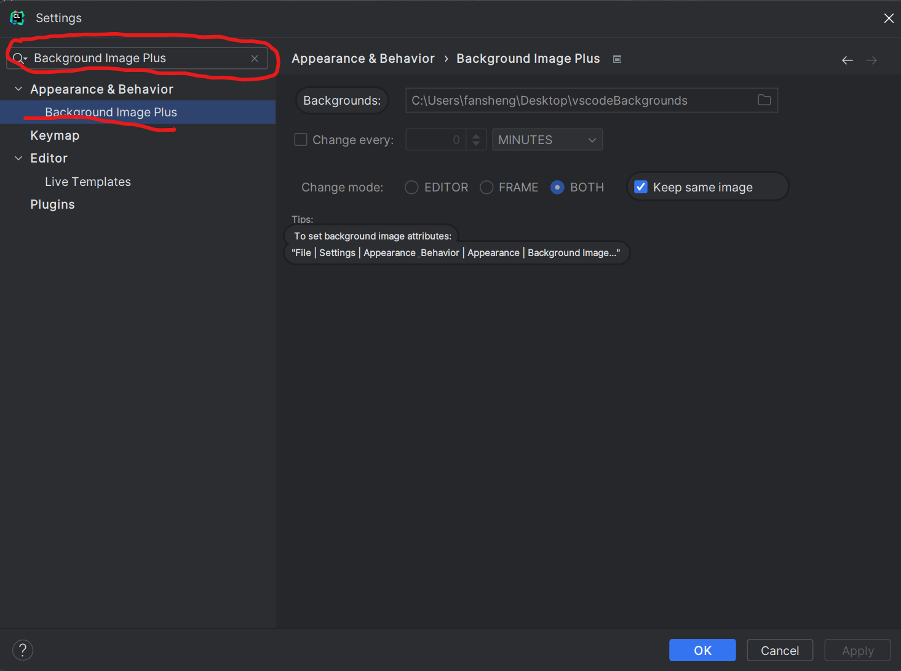

JetBrains编辑器的界面很好看，那么如何让它更加华丽点呢？下面就介绍一个很好用的背景插件
Background Image Plus +
1、安装
以Clion为例，在左上角打开Settings，搜索Plugins，在Marketplace中搜索Background Image Plus +，点击Install下载。
2、设置图片路径
在Settings中搜索Background Image Plus，在Appearance & Behavior中选择Background Image Plus，点击文件夹图标选择含有背景图片的文件夹。

这里解释一下右侧的一些设置：
Change every:设定改变间隔
Change mode-EDITOR:改变区域-编辑器
Change mode-FRAME:改变区域-边框
Change mode-BOTH:改变区域-全部
设置好后点击Apply确认，然后点击OK退出。
效果如下

这样就简单的设置好背景了。接下来就可以愉快的写代码了:)